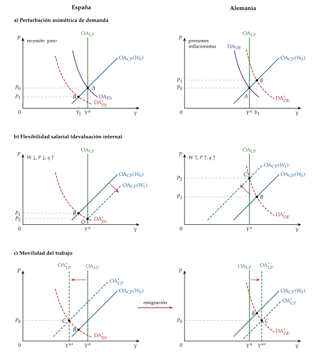
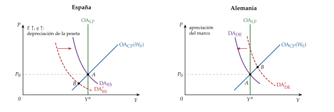
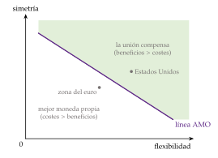
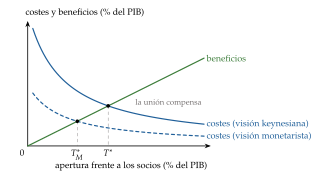
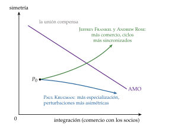
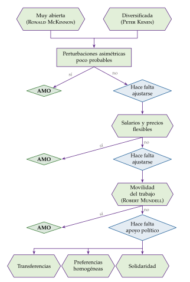

Tema 3.B.16
Teoría de la integración monetaria.
Áreas monetarias óptimas: Mundell, McKinnon y Kenen, coste-beneficio, endogeneidad, credibilidad y la fragilidad de una unión incompleta como el euro.
Exclusivo Material exclusivo de victorgutierrezmarcos.es y la app Oposición TCEE · DCE. Puedes usarlo libremente para tu estudio personal. No se autoriza su incorporación a otras plataformas, aplicaciones o servicios. Condiciones de uso.
Introducción
Enganche:
«El casado casa quiere», dice el refrán.
El 1 de enero de 2026 Bulgaria adoptó el euro, y la zona del euro pasó a tener 21 miembros (Banco Central Europeo, 2026b; Comisión Europea, 2026a): 21 países con una sola moneda y un solo banco central, pero con 21 presupuestos, 21 mercados de trabajo y 21 sistemas bancarios que siguen siendo, en buena parte, de cada casa.
Casi 3 décadas después de su nacimiento, el euro sigue sumando socios y sigue amueblando su casa común: la unión bancaria está a medias y la capacidad fiscal común es pequeña.
La pregunta que recorre la exposición es sencilla: ¿cuándo compensa a un país renunciar a su moneda y a su tipo de cambio propios? Y, si renuncia, ¿qué casa común hace falta para que el matrimonio funcione?
Relevancia:
Para España: desde 1999 no tiene tipo de cambio frente a sus principales socios ni política monetaria propia (Comisión Europea, 2026a). Vivió las 2 caras de la unión: el fin de las devaluaciones de la peseta y de la prima de riesgo cambiaria y, en 2010-2012, una crisis sin tipo de cambio con que ajustarse [ver tema 4.A.28].
Para la política económica: la teoría dice qué instrumentos le quedan a un país dentro de la unión (la política fiscal y las reformas) y qué instituciones necesita la unión (unión bancaria, capacidad fiscal, un prestamista de última instancia).
Para la teoría: es el punto de encuentro de la macroeconomía abierta (el ajuste sin tipo de cambio) [ver tema 3.A.32], de la credibilidad de la política monetaria [ver tema 3.A.36] y de la integración económica [ver tema 3.B.10].
Más allá de Europa: hay uniones monetarias en África Occidental y Central y en el Caribe Oriental (anexo D).
Contextualización:
Las definiciones de partida:
la integración monetaria es el proceso por el que varios países fijan de forma irrevocable sus tipos de cambio o adoptan una moneda común y, con ello, ceden la política monetaria a una autoridad común. Es uno de los peldaños más altos de la escalera de la integración económica [ver tema 3.B.10];
en términos de Tinbergen (1954), combina integración negativa (quitar barreras: los controles de cambios y los márgenes de fluctuación) e integración positiva (crear instituciones comunes: un banco central);
la definición de referencia de unión monetaria es la del Informe Werner: convertibilidad total e irreversible de las monedas, sin márgenes de fluctuación, con paridades fijadas de forma irrevocable y con libertad total de capitales; la moneda única no es imprescindible, pero da irreversibilidad al proyecto (Consejo y Comisión de las Comunidades Europeas, 1970). El Informe Delors (abril de 1989) llevó esa idea a 3 etapas, que acabaron en el euro (Comité para el Estudio de la Unión Económica y Monetaria, 1989) [ver tema 3.B.43];
Corden (1972) separa la seudounión cambiaria, en la que los países mantienen fijos sus tipos de cambio pero conservan su banco central, sus reservas y su política monetaria, de la unión cambiaria completa, con reservas comunes y un solo banco central. La primera es frágil: la paridad se puede abandonar (apartado II.4.2).
La unión monetaria en el abanico de regímenes cambiarios:
entre la flotación libre y el tipo fijo hay regímenes intermedios, y la unión monetaria es el extremo de los anclajes duros (hard pegs), junto a la dolarización y la caja de conversión: el país renuncia a su moneda o a su política monetaria [ver tema 3.B.15];
el FMI cuenta hoy 4 uniones monetarias: la zona del euro, que flota frente al resto del mundo, y 3 con un ancla cambiaria, la del Caribe Oriental (caja de conversión con el dólar) y las 2 del franco CFA (la UMOA, pilar monetario de la UEMOA, y la CEMAC, ancladas al euro), cada una con su banco central común (Fondo Monetario Internacional, 2024);
formar una unión monetaria equivale a fijar los tipos de cambio de forma irreversible: por eso su análisis nace del debate entre tipos fijos y flexibles1 y, con movilidad del capital, fijar el tipo es renunciar a la política monetaria propia (el trilema) [ver tema 3.A.32].
La convención: el tipo de cambio \(E\) es directo (euros por unidad de moneda extranjera), de modo que una subida es una depreciación; el tipo de cambio real es \(q\equiv E\,P^*/P\) y su subida, una ganancia de competitividad-precio [ver tema 3.B.13].
La teoría: la inició Robert Mundell en 1961 con una pregunta, ¿cuál es el dominio apropiado de una moneda?, y ha seguido de cerca la integración europea hasta el euro (Mundell, 1961).
Problemática:
¿Cuándo compensa a un grupo de países renunciar al tipo de cambio propio? ¿Qué cuesta y de qué depende?
¿Qué se gana a cambio?
¿Se cumplen las condiciones antes de entrar o las crea (o las destruye) la propia unión?
¿Qué instituciones necesita una unión monetaria para no ser frágil?
Estructura:
La exposición sigue la historia de la teoría, que va de los costes a los beneficios y de estos a las instituciones:
I. Costes de una moneda común (I): la teoría de las áreas monetarias óptimas de los años 60 y 70, con Mundell, McKinnon, Kenen y sus criterios;
II. Análisis coste-beneficio (II): la segunda fase de la teoría, en los años 80 y 90, con los beneficios (entre ellos, la credibilidad) y el debate sobre si los criterios se cumplen solos una vez dentro;
III. Las uniones monetarias incompletas (III): lo que enseñó la crisis del euro, que una unión monetaria sin unión bancaria ni fiscal es frágil, y cómo completarla.
3.B.16. Teoría de la integración monetaria
Introducción2′30″
I. Costes de una moneda común: el enfoque tradicional de las AMO11′
1. Idea
2. Enfoque por criterios
3. Condiciones para constituir un área monetaria óptima
4. Valoración
II. Análisis coste-beneficio: la segunda fase de las AMO9′
1. La emergencia de la segunda fase
2. Debate acerca de la endogeneidad de los criterios
3. Evidencia empírica
4. Otros beneficios y costes de la integración monetaria
5. ¿Para quién son óptimas las áreas monetarias óptimas?
III. Las uniones monetarias incompletas y cómo completarlas6′30″
1. Introducción
2. Problemas de una unión monetaria incompleta
3. Soluciones
Conclusión1′
Reparto del cante: introducción, 2′30″; I, 11′ (I.1, 1′; I.2, 7′30″; I.3, 1′30″; I.4, 1′); II, 9′ (II.1, 2′; II.2, 2′30″; II.3, 1′30″; II.4, 2′30″; II.5, 0′30″); III, 6′30″ (III.1, 0′30″; III.2, 2′30″; III.3, 3′30″), y conclusión, 1′. Todo el tema vuelve al mismo ejemplo: España y Alemania dentro del euro. Los criterios se ordenan por las 3 dimensiones de De Grauwe (simetría, flexibilidad e integración) que cierran el apartado I y que el apartado II convierte en coste-beneficio. Los gráficos imprescindibles son la oferta y la demanda agregadas de los 2 países, los costes y beneficios frente a la apertura y el plano simetría-integración con las 2 hipótesis de la endogeneidad.
Para ampliar: la conferencia «El euro como zona monetaria (no) óptima» (Vara, 2019), y las entradas «Optimum Currency Areas» y «Currency Unions» del New Palgrave Dictionary of Economics (Macmillan Publishers Ltd, 2018c, 2018a).
Según el FMI, a 30 de abril de 2023 el 44,8 % de sus miembros tenía un anclaje blando, el 32,5 % flotaba y el 13,4 % tenía un anclaje duro (sin moneda propia o con caja de conversión); los países del euro aparecen en libre flotación frente al resto del mundo (Fondo Monetario Internacional, 2024) [ver tema 3.B.15].
I. Costes de una moneda común: el enfoque tradicional de las AMO
Empezamos por lo que cuesta compartir moneda, que es por donde empezó la teoría en los años 60 y 70.
Conclusión anticipada: sin tipo de cambio, el coste lo pagan las perturbaciones asimétricas, las que golpean a un socio y no a los demás. Es pequeño si los países tienen con qué ajustarse sin tipo de cambio (salarios flexibles, trabajo móvil), con qué asegurarse (un presupuesto común, mercados financieros integrados) o si las perturbaciones son simétricas. La teoría lo resume en una lista de criterios.
I.1. Idea
El coste de una moneda común: un país que entra en una unión monetaria renuncia a 3 instrumentos:2
cambiar el precio de su moneda (devaluar o revaluar);
fijar la cantidad de dinero en circulación;
fijar el tipo de interés a corto plazo.
Su banco central no desaparece (en la zona del euro, los bancos centrales nacionales forman el Eurosistema con el BCE), pero ya no decide la política monetaria del país: la decide el banco central común para el conjunto.
La teoría de las áreas monetarias óptimas (AMO) estudia cuándo ese coste es pequeño. La iniciaron Mundell (1961),3 McKinnon (1963) y Kenen (1969), y se centró en el lado de los costes del análisis coste-beneficio.
Área monetaria, en Mundell (1961): un territorio dentro del cual los tipos de cambio son fijos para siempre (o hay una sola moneda), mientras que frente al resto del mundo el tipo de cambio flota.
Área monetaria óptima: la que puede mantener a la vez el equilibrio interno (pleno empleo y estabilidad de precios) y el externo (una balanza de pagos sostenible) sin necesidad de variar los tipos de cambio entre sus miembros. Para Mundell, es la región con movilidad de los factores dentro y sin ella hacia fuera.
I.2. Enfoque por criterios
La literatura propone varios criterios que delimitan un área monetaria óptima: cada autor señaló uno como el decisivo (tabla 1).
Es un enfoque pesimista, porque mira lo que se pierde: ¿a qué renunciamos al renunciar a una moneda propia?
Para que no queden como una lista suelta, los criterios se ordenan por lo que hacen, con las 3 dimensiones que cierran el apartado (I.3):
Mundell explica cómo ajustarse sin tipo de cambio (flexibilidad);
Kenen e Ingram, cómo repartir el golpe entre los socios (integración como seguro);
Kenen, Magnifico y las instituciones laborales, cuándo es raro que el golpe sea asimétrico (simetría);
McKinnon, cuánto vale de verdad el instrumento al que se renuncia (integración comercial).
| Autor | Criterio: ¿qué hace? | Dimensión |
|---|---|---|
| Criterios económicos | ||
| Mundell (1961) | Flexibilidad salarial o movilidad del trabajo: hacen el ajuste que haría el tipo de cambio | flexibilidad |
| Kenen (1969) | Integración fiscal: un presupuesto común asegura frente a las perturbaciones propias | integración (seguro público) |
| Ingram (1959, 1973) | Integración financiera: los mercados de capitales financian los desequilibrios y reparten el riesgo | integración (seguro privado) |
| Kenen (1969) | Diversificación productiva: con muchos sectores, una perturbación sectorial pesa poco en el conjunto | simetría |
| Magnifico (1971); Bruno y Sachs (1985); Calmfors y Driffill (1988) | Propensiones a la inflación parecidas e instituciones laborales que respondan igual: si no, el tipo real se mueve aunque el nominal esté fijo | simetría |
| McKinnon (1963) | Apertura: cuanto más abierta es la economía, menos eficaz es el tipo de cambio y más se gana con una moneda común | integración (comercio) |
| Criterios políticos | ||
| Corden (1972); De Grauwe (1975) | Preferencias de política compatibles (inflación frente a paro) | – |
| Kenen (1969); Oates (1972) | Transferencias fiscales de carácter federal o flexibilidad de las políticas nacionales | – |
| Baldwin y Wyplosz (2020) | Destino común frente a nacionalismo: aceptar con solidaridad los costes de la unión en nombre de un proyecto compartido | – |
Fuente: elaboración propia a partir de De Grauwe (2022) y Baldwin y Wyplosz (2020).
I.2.1. Mundell (1961): flexibilidad de los mercados de factores
a) Idea
Mundell (1961) abre la teoría con una perturbación asimétrica de demanda y una pregunta: sin tipo de cambio entre 2 regiones, ¿hay algún mecanismo que devuelva cada una al pleno empleo?
Su respuesta: sí, si los salarios son flexibles o el trabajo se mueve entre ellas. Si no, mejor tipos de cambio flexibles.
b) Modelo
i) Supuestos
2 países, España y Alemania, en una unión monetaria: han abandonado sus monedas, han adoptado el euro y comparten un banco central, el BCE. Entre ellos \(E\equiv 1\), así que el tipo real de España frente a Alemania es \(q=P^*/P\), el precio de lo alemán frente a lo español.
Demanda agregada de cada país, \(\mathrm{DA}_{\mathrm{ES}}\) y \(\mathrm{DA}_{\mathrm{DE}}\): cae con su propio precio, porque lo encarece frente a lo del socio (efecto sustitución vía \(q\)).4
Oferta agregada de corto plazo, \(\mathrm{OA}_{\mathrm{CP}}(W_0)\), dibujada con el salario nominal dado, y de largo plazo, \(\mathrm{OA}_{\mathrm{LP}}\), vertical en la producción natural \(Y^n\) [ver tema 3.A.32].
Equilibrio inicial en \(Y^n\) en los 2 países (punto \(A\); gráfico 1, panel a).
ii) Desarrollo
La perturbación: un cambio en las preferencias de los consumidores desplaza la demanda de los bienes españoles a los alemanes. La \(\mathrm{DA}_{\mathrm{ES}}\) cae y la \(\mathrm{DA}_{\mathrm{DE}}\) sube (punto \(B\), panel a).
Con moneda propia, el problema se resolvería con un solo instrumento: España bajaría su tipo de interés o devaluaría, \(E\) y \(q\) subirían y la demanda volvería hacia España; Alemania haría lo contrario. Es la referencia frente a la que se mide el coste de la unión (gráfico 2).
En la unión, el ajuste tiene que venir de los mercados de factores:7
flexibilidad salarial: los parados españoles aceptan salarios más bajos y los trabajadores alemanes, más demandados, consiguen subidas. La \(\mathrm{OA}_{\mathrm{CP}}\) española baja y la alemana sube (panel b): los precios españoles caen frente a los alemanes, \(q\) sube y la demanda vuelve hacia España, hasta que los 2 países recuperan \(Y^n\) con otros precios (punto \(C\)).8 Sin tipo de cambio propio, es la devaluación interna: que los costes y los precios nacionales avancen por debajo de los del resto de la unión hasta recuperar el tipo real perdido. Tarda y destruye empleo, porque los salarios nominales casi nunca bajan (Schmitt-Grohé y Uribe, 2016) [ver tema 3.A.32] [ver tema 3.B.11];
movilidad del trabajo: los parados españoles emigran a Alemania, donde sobra demanda de trabajo. La capacidad productiva española se contrae y la alemana se amplía: las curvas de oferta se desplazan (\(\mathrm{OA}'\)), a la izquierda en España y a la derecha en Alemania, con \(Y^n\) (panel c). Los 2 países vuelven al precio inicial \(P_0\) sobre su nueva demanda (punto \(C\)): desaparecen el paro español y el exceso de demanda alemán.9
Sin ninguno de los 2, el ajuste es lento y lo hace solo Alemania: su inflación sube \(q\) desde el otro lado y devuelve poco a poco la demanda a España. El ajuste toma la forma de inflación en Alemania y deflación (o recesión larga) en España.

Fuente: elaboración propia a partir de Mundell (1961), De Grauwe (2022) y Baldwin y Wyplosz (2020). a) La demanda pasa de España a Alemania: de \(A\) a \(B\), recesión en España y exceso de demanda en Alemania. b) Flexibilidad salarial: en España bajan los salarios y los precios y en Alemania suben; en los 2, \(q\) sube y vuelven a \(Y^n\) con otros precios (\(C\)). c) Movilidad del trabajo: la oferta (\(\mathrm{OA}'\)) y \(Y^n\) se desplazan a la izquierda en España y a la derecha en Alemania, y los 2 vuelven a \(P_0\) sobre la nueva demanda (\(C\)).
El ajuste con moneda propia (para consultar; no se canta).
Con tipo flexible, España bajaría su tipo de interés para estimular su demanda y Alemania lo subiría para frenar la suya: la peseta se depreciaría frente al marco, \(E\) y \(q\) subirían y la demanda volvería hacia España.
Con tipo fijo pero ajustable, España podría devaluar la peseta: el mismo efecto sobre \(q\), de golpe.
En los 2 casos, un solo instrumento resolvería el paro español y la inflación alemana: demasiado bueno para ser verdad, como se verá en la valoración (I.4).

Fuente: elaboración propia a partir de De Grauwe (2022).
iii) Implicaciones
Los países con salarios flexibles o con trabajo móvil entre ellos pueden compartir moneda; entre los que no los tienen, mejor tipos de cambio flexibles.
Los 2 mecanismos corrigen el paro y el déficit exterior del país de la perturbación negativa (España); en el de la positiva (Alemania), el efecto sobre los precios depende de cuánto suban sus salarios.
c) Extensiones
Perturbaciones transitorias y sincronía de los ciclos: la actividad alterna expansiones y recesiones.
Si los ciclos de los socios están sincronizados, la política monetaria común sirve a todos («una talla para todos», one size fits all): cuanto mayor es la sincronía, menor es el coste de la unión.
Si no lo están, un país en recesión convive con otro en expansión y el tipo de interés común no conviene a ninguno. Al ser una perturbación transitoria, no compensa ajustar precios y salarios ni emigrar: lo que importa es cómo se financia la recesión.
De Grauwe (2022) distingue 2 escenarios, según cómo reaccionen los mercados de deuda:
benigno: si los inversores confían en que España pagará su deuda (que ha subido con la recesión), compran la nueva deuda española sin pedir más interés y retiran parte de la alemana. Los mercados de capitales llevan renta del país en expansión al país en recesión y estabilizan;
maligno: si desconfían, venden bonos españoles y compran alemanes, sube la prima de riesgo y sale liquidez de España hacia Alemania, lo contrario de lo que haría falta. La recesión se agrava, y el miedo a que España no pueda pagar se cumple a sí mismo: los mercados amplifican el ciclo.10
El escenario maligno es la fragilidad de una unión monetaria sin prestamista de última instancia para los Estados, que desarrolla el apartado III.
d) Evidencia empírica
La movilidad del trabajo es menor en Europa que en Estados Unidos: allí, tras una perturbación regional, el ajuste se hace sobre todo con la emigración (Blanchard y Katz, 1992); en Europa, durante los primeros años se hace con la tasa de actividad y no con la migración (Decressin y Fatás, 1995).
La movilidad, aunque libre, es baja: unos 10 millones de ciudadanos de la UE en edad de trabajar viven en otro Estado miembro, menos del 4 % de la población de 20 a 64 años (Eurostat, 2026e). Pesan la lengua, la vivienda y el reconocimiento de títulos.
Y la libre circulación tiene grietas: desde 2015 varios países han vuelto a controlar sus fronteras interiores por la inmigración irregular y la seguridad, y en noviembre de 2026 lo hacían 8 del espacio Schengen, entre ellos Alemania y Francia (Comisión Europea, 2026c); la reforma del Código de fronteras Schengen de 2024 permite mantenerlos hasta 3 años (Parlamento Europeo y Consejo de la Unión Europea, 2024b).
La flexibilidad salarial sigue siendo una asignatura pendiente en el sur. En su carta del 5 de agosto de 2011 al presidente del Gobierno, el BCE pidió a España descentralizar la negociación colectiva y suprimir las cláusulas que ligan los salarios a la inflación (Trichet y Fernández Ordóñez, 2011); 2 días después anunció que aplicaría activamente su programa para los mercados de valores (en la práctica, compró deuda española e italiana) (Banco Central Europeo, 2011) [ver tema 4.A.16].
e) Valoración
Mundell explica bien por qué los costes nacen de las perturbaciones asimétricas, pero mira solo el ajuste por el trabajo.
Si los salarios no se mueven y el trabajo no emigra, queda otra salida: repartir el golpe entre los socios. Es lo que miran los 2 criterios siguientes.
I.2.2. Kenen (1969): integración fiscal
Idea: un presupuesto común para toda la unión hace de seguro frente a las perturbaciones asimétricas (Kenen, 1969).
Mecanismo: centralizar el presupuesto tendría 2 consecuencias:
un mecanismo asegurador: ante una perturbación asimétrica, el presupuesto común lleva recursos automáticamente al país golpeado (menos impuestos que paga, más prestaciones que recibe), y reduce el coste de renunciar a la política monetaria propia;11
un mecanismo de protección: la deuda de los gobiernos nacionales pasa a ser deuda de la unión. Desaparecen los movimientos de capital desestabilizadores de un mercado de bonos a otro, y el gobierno de la unión se endeuda en una moneda que controla, así que se evitan las crisis de liquidez.
Límites: un federalismo fiscal pleno es casi imposible entre Estados soberanos:
cada Estado perdería también su última política de estabilización, la fiscal;
crearía riesgo moral: si un país sabe que en la recesión recibirá transferencias, tiene menos prisa por corregir sus desequilibrios. Eso podría llevar a transferencias grandes y permanentes de unos países a otros, y los que pagan se opondrían.12
¿Cuánto asegura? En Estados Unidos, el Gobierno federal absorbe el 13 % de las perturbaciones de la producción de cada estado (Asdrubali, Sørensen y Yosha, 1996). En la zona del euro el presupuesto común es pequeño: en 2026 la UE gasta 190.100 millones de euros, en torno al 1 % de su PIB (Parlamento Europeo, 2025; Eurostat, 2026b), frente al 23 % del PIB del Gobierno federal de Estados Unidos (Congressional Budget Office, 2026) [ver tema 3.B.37].
I.2.3. Ingram (1959, 1973): integración financiera
Idea: el seguro también puede ser privado y pasar por los mercados financieros (Ingram, 1959, 1973).
Mecanismo: volvamos a España y Alemania con mercados financieros plenamente integrados.
Con la perturbación, las empresas españolas pierden y sus acciones bajan. Como los alemanes también tienen acciones españolas, pagan parte de la caída de la actividad en España; y los españoles participan de la subida de las acciones alemanas.
Lo mismo vale para los bonos y el crédito: los flujos de capital financian los desequilibrios temporales.
Frente al seguro público: reduce el riesgo moral y deja la política fiscal para estabilizar.
Límites: falla cuando más se necesita, porque los inversores prefieren los activos de su país (sesgo doméstico) y los flujos de crédito se pueden dar la vuelta en una crisis; y solo asegura a quien tiene una cartera diversificada: los parados españoles sin activos alemanes no están asegurados.
¿Cuánto asegura? En Estados Unidos los mercados de capitales absorben el 39 % de las perturbaciones de cada estado y el crédito el 23 %, más que el presupuesto federal; queda sin suavizar el 25 % (Asdrubali, Sørensen y Yosha, 1996). En la zona del euro ese seguro privado es menor, aunque el BCE ve mejoras desde 2022 (Banco Central Europeo, 2026d): de ahí la unión de los mercados de capitales [ver tema 3.B.44].
I.2.4. Kenen (1969): diversificación productiva
Idea: pasamos de cómo repartir el golpe a cuándo es raro que el golpe sea asimétrico. En zonas con una producción muy diversificada, los ajustes cambiarios no son ni necesarios, ni eficientes, ni deseables, porque una perturbación negativa en un sector se compensa con los demás (Kenen, 1969).
Mecanismo: un país diversificado exporta muchos productos distintos. Salvo ante perturbaciones que afectan a todo, unas exportaciones van bien mientras otras van mal: sus exportaciones son más estables, presionan menos sobre la balanza de pagos y el tipo de cambio, y el país tolera mejor un tipo fijo.
En la zona del euro, en general, sí: las grandes economías son diversificadas; las excepciones son pequeñas.
Es la intuición que Krugman (1993) pondrá en duda: la integración puede reducir la diversificación (II.2.1).
I.2.5. Magnifico (1971): propensiones a la inflación parecidas
Idea: 2 o más países pueden compartir moneda si tienen propensiones a la inflación parecidas; si no, el tipo real se mueve aunque el nominal esté fijo, y hace falta ajustar el tipo de cambio para compensar las pérdidas de competitividad (Magnifico, 1971).
Mecanismo: con \(q\equiv E\,P^*/P\), en tasas de variación, \[\gamma_q\simeq\underbrace{\gamma_E}_{=\,0\ \text{en la unión}}+\gamma_{P^*}-\pi \quad\Longrightarrow\quad \gamma_q\simeq\gamma_{P^*}-\pi, \tag{1}\] donde \(\gamma_{P^*}\) es la inflación de los socios.13 Un país con más inflación que sus socios se aprecia en términos reales año tras año, sin poder devaluar [ver tema 3.B.11]. Si las inflaciones son parecidas, los desequilibrios externos entre los socios son menores y cuesta menos renunciar a la política monetaria propia.
Las instituciones del mercado de trabajo: con la misma perturbación de oferta, la forma de negociar los salarios decide cuánto suben los salarios y los precios en cada país, y crea diferenciales de inflación aunque la perturbación sea común (Bruno y Sachs, 1985).
Bruno y Sachs (1985): ante una perturbación de oferta (el petróleo en los 70), un sistema centralizado interioriza que pedir más salario nominal solo trae más inflación y modera sus peticiones; en uno descentralizado, cada sindicato pesa poco en la inflación y todos acaban pidiendo más.14
Calmfors y Driffill (1988) añaden el otro extremo: con negociación de empresa, una subida excesiva cuesta empleo en la propia empresa y también modera. La relación entre centralización y salario real (o paro) es una joroba (gráfico 3): lo peor es el nivel sectorial, que no interioriza ni la inflación (como el centralizado) ni la pérdida de empleo de la empresa (como el de empresa).
Con datos recientes, lo que cuenta es la coordinación entre niveles más que la centralización (OCDE, 2019) [ver tema 3.A.27].
En una unión monetaria, donde el tipo de cambio ya no ajusta, esa diferencia es una perturbación asimétrica de costes, con los problemas de ajuste de Mundell.
En la zona del euro, a medias. Los criterios de convergencia exigen una inflación parecida a la de los países más estables antes de entrar.15 Pero en los 10 primeros años del euro los precios subieron un 37 % en España y un 18 % en Alemania (un 24 % en la zona), y el tipo de cambio real español se apreció sin poder devaluar; entre 2008 y 2019 la diferencia cambió de signo (un 13 % frente a un 15 %), la devaluación interna (Eurostat, 2026c) [ver tema 3.B.11]. Con la crisis energética la dispersión volvió: en 2022 la inflación fue del 5,9 % en Francia y del 19,4 % en Estonia.

Fuente: elaboración propia a partir de Calmfors y Driffill (1988).
I.2.6. McKinnon (1963): grado de apertura
Idea: queda la pregunta de cuánto se pierde de verdad al renunciar al tipo de cambio. McKinnon (1963) responde que, en una economía muy abierta, poco. La apertura se mide por el peso de los bienes comerciables (exportables e importables) frente a los no comerciables.
Mecanismo: cuanto más abierta, menos falta la política monetaria propia, por 2 vías:
cuesta menos corregir un déficit exterior con la política fiscal. Un recorte del gasto baja la renta y, con ella, las importaciones. Con el multiplicador de la economía abierta y las exportaciones netas \(\mathrm{XN}=x\,Y^*-m\,Y+\nu\,q\) [ver tema 3.A.32], \[\Delta Y=\frac{\Delta\overline{G}}{1-c\,(1-t)+m},\qquad \Delta\mathrm{XN}=-m\,\Delta Y\quad\Longrightarrow\quad \frac{\Delta Y}{\Delta\mathrm{XN}}=-\frac{1}{m}. \tag{2}\] Cada euro de mejora del saldo exterior cuesta \(1/m\) euros de renta: cuanto mayor es la propensión a importar \(m\), menos renta hay que sacrificar y menos falta el tipo de cambio;16
la devaluación es menos eficaz: cuanto más pesan en la cesta los bienes importados y los comerciables, más sube el índice de precios de consumo con una devaluación. Si los salarios lo siguen, la ganancia de competitividad se borra antes; y más aún si se importan muchos insumos intermedios.
Implicación: un país en el que los bienes comerciables pesan mucho en la producción puede compartir moneda; si pesan poco, mejor que no fije su tipo de cambio. Por eso las economías pequeñas y abiertas son las más interesadas en las uniones monetarias.
En la zona del euro el criterio se cumple en buena medida: casi la mitad del comercio de bienes de los países del euro es con otros países del euro (el 47,6 % de sus exportaciones en 2025, frente al 52-53 % de 2002-2007) (Eurostat, 2026a), y son economías muy abiertas: exportaciones e importaciones suman el 69 % del PIB en España y el 78 % en Alemania (Eurostat, 2026b).
I.3. Condiciones para constituir un área monetaria óptima
La teoría tradicional fija las condiciones que deben cumplir los países para que la unión les compense con el menor coste. Se ha usado para decidir si un país debía entrar en una unión y también para estudiar cuándo un socio podría preferir salir.
La teoría tradicional se puede leer como un árbol de preguntas, de la apertura y la diversificación a la flexibilidad, la movilidad y el apoyo político (anexo A).
De Grauwe (2022) reduce los criterios a 3 dimensiones:
simetría de las perturbaciones: las de cada socio, bastante correlacionadas con las de los demás;
flexibilidad: mercados de trabajo capaces de ajustarse a las perturbaciones asimétricas una vez dentro;
integración con los socios, comercial y financiera, de la que salen los beneficios de usar la misma moneda.
La línea AMO (gráfico 4): las combinaciones mínimas de simetría y flexibilidad con las que los costes y los beneficios de la unión se igualan.
Con la simetría en el eje vertical y la flexibilidad en el horizontal, tiene pendiente negativa: con menos simetría hay más perturbaciones asimétricas, y hace falta más flexibilidad para compensarlas.
Por encima de la línea, los beneficios de la unión superan a los costes; por debajo, al revés. Con los datos de los apartados siguientes, la zona del euro queda por debajo de la línea AMO (perturbaciones menos simétricas y mercados menos flexibles) y Estados Unidos, por encima.
Lo mismo pasa con la integración en lugar de la flexibilidad: con más comercio mutuo, la unión compensa con menos simetría. Las 3 dimensiones juntas forman una superficie AMO; el apartado II.2 usa el plano simetría-integración.

Fuente: elaboración propia a partir de De Grauwe (2022).
I.4. Valoración
Aportación: una lista de criterios útil para juzgar una unión, que pesó mucho en el diseño del euro.
El problema de la indeterminación: los criterios no tienen un marco común y pueden apuntar en direcciones opuestas; un país muy abierto, que gana con la unión, puede tener una inflación alta, que la desaconseja (Tavlas, 1994).
Las críticas de los años 80 rebajan los costes que la teoría tradicional atribuía a la unión (De Grauwe, 2022):
la política monetaria no mueve la producción a largo plazo: con la curva de Phillips vertical, una devaluación solo da competitividad mientras los salarios no la alcanzan, y su eficacia depende de que se cumpla la condición de Marshall-Lerner y de que no haya indexación [ver tema 3.A.28] [ver tema 3.B.12];
los diferenciales de inflación pueden ser de equilibrio: por el efecto Balassa-Samuelson, los países que convergen tienen más inflación sin perder competitividad [ver tema 3.B.14];
el tipo de cambio puede ser fuente de perturbaciones: a menudo, los países que conservan una política cambiaria y monetaria propia descubren que es más una fuente de desequilibrios que un instrumento de estabilización; y la discrecionalidad tiene un sesgo inflacionista, así que renunciar a ella es una ganancia de credibilidad (II.4.2).
Mundell contra Mundell: el propio Mundell defendió después que una moneda común reparte el riesgo, porque los residentes de cada país tienen activos de todos y amortiguan juntos las perturbaciones (Mundell, 1973). McKinnon (2004) llama «Mundell I» a la teoría escéptica de 1961 y «Mundell II» a esta, que apoya la unión.
Lo que deja abierto: los criterios se tratan como datos fijos. ¿Y si la propia unión los cambia? Y a los costes ¿no hay que restarles los beneficios? Son las 2 preguntas del apartado siguiente.
II. Análisis coste-beneficio: la segunda fase de las AMO
Una vez estudiados los costes, pasamos a ponerlos frente a los beneficios, que es lo que hizo la teoría desde finales de los 80.
Conclusión anticipada: el coste baja y el beneficio sube con la integración, así que la unión compensa a partir de un grado de integración. Y los criterios no son fijos: la unión puede crear las condiciones o destruirlas. La evidencia apunta a lo primero, con matices; y el beneficio más discutido, la credibilidad, explica por qué Italia o España quisieron entrar.
II.1. La emergencia de la segunda fase
Tras las aportaciones de los años 60 y 70, en los 80 hay pocas: el proyecto de unión monetaria europea pierde impulso.
En los 90, con el Informe Delors y Maastricht, el debate vuelve con 2 novedades (Mongelli, 2002):
el análisis coste-beneficio: la decisión depende de cómo se ponderen los costes y los beneficios. Como las ponderaciones cambian entre países y con el tiempo, no hay una regla general, pero sí una forma de ordenarlos;
la batalla de los paradigmas sobre si los criterios son endógenos: la hipótesis de la especialización de Krugman (1993) frente a la hipótesis de la endogeneidad de Frankel y Rose (1998) (II.2).
Costes y beneficios frente a la apertura (gráfico 5):
los beneficios crecen con el comercio que el país hace con sus socios: más transacciones en la misma moneda;
los costes caen con él, por el argumento de McKinnon: cuanto más abierta, menos eficaz es el tipo de cambio;
a partir de un umbral de apertura \(T^*\), la unión compensa (De Grauwe, 2022). El umbral está más a la izquierda si la política monetaria es poco eficaz (visión monetarista) y más a la derecha si los salarios son rígidos y el trabajo poco móvil (visión keynesiana, la de Mundell).
Costes y beneficios frente al tamaño: una moneda es más útil cuantos más la usan, pero cuanto mayor y más diversa es el área, más frecuentes son las perturbaciones asimétricas. Ya Mundell (1961) advertía que la utilidad del dinero limita el número de monedas: el área óptima no es ni el mundo entero ni cada región.

Fuente: elaboración propia a partir de De Grauwe (2022). A la derecha del umbral \(T^*\), los beneficios superan a los costes; con costes «keynesianos» el umbral está más a la derecha.
II.2. Debate acerca de la endogeneidad de los criterios
La pregunta: ¿se cumplen los criterios ex post, una vez formada la unión, aunque no se cumplieran ex ante? ¿Hay fuerzas que acercan a los países a un área óptima o que los alejan de ella?
II.2.1. La hipótesis de la especialización de Krugman (1993)
a) Idea
Krugman (1993) compara Europa con Estados Unidos: los estados de Estados Unidos, con un mercado integrado desde hace mucho, están mucho más especializados que los países europeos, y sufren crisis regionales fuertes, como la de Massachusetts y el resto de Nueva Inglaterra a finales de los 80.
Si el mercado único y el euro integran Europa como Estados Unidos, las regiones europeas se especializarán, las perturbaciones sectoriales se volverán nacionales y, sin tipo de cambio, más costosas.
b) Modelo
i) Supuestos
Se apoya en la nueva geografía económica: el modelo centro-periferia de Krugman (1991), con rendimientos crecientes, costes de comerciar y movilidad de los factores, en el que la industria se puede concentrar en una región aunque no haya diferencias de partida entre ellas [ver tema 3.B.6].17
ii) Desarrollo
Fuerzas de aglomeración (centrípetas):
el efecto del mercado doméstico: las empresas se instalan donde está la demanda, y la demanda sigue a los trabajadores;
el del coste de la vida: donde hay más variedades, el índice de precios es menor y el salario real mayor;
las economías de escala externas de Alfred Marshall (proveedores especializados, un mercado de trabajo común y difusión del conocimiento) y el aprendizaje, que bajan los costes de toda la industria cuanto más produce.
Fuerzas de dispersión (centrífugas): los factores inmóviles (la tierra y, en Europa, buena parte del trabajo) y la competencia entre las empresas de una misma región.
El resultado: con costes de comerciar altos, la industria se reparte entre las regiones; cuando caen por debajo de un umbral (el punto de ruptura), cualquier perturbación la concentra en un centro, y la historia decide cuál [ver tema 3.B.6].
La aplicación a la unión monetaria: la moneda común elimina el riesgo de tipo de cambio y los costes de cambiar de moneda, es decir, abarata comerciar. Si se cruza el umbral, la industria se concentra en un centro y la periferia se especializa en otras actividades.
iii) Implicaciones
La unión haría que, ex post, se incumpliera el criterio de diversificación de Kenen (I.2.4): más especialización, perturbaciones más asimétricas y una unión menos deseable con el paso del tiempo.
Lejos de crear sola las condiciones para ser óptima, la unión podría destruirlas.
c) Valoración
El modelo da por hecho que los trabajadores se trasladan a donde se concentra la industria, y en Europa cambian poco de país; y los centros industriales no tienen por qué respetar las fronteras: un cluster puede extenderse por varios países, y entonces la especialización regional no se traduce en perturbaciones nacionales (De Grauwe, 2022).
Además, buena parte del comercio entre países europeos es intraindustrial, lo que apunta en la dirección contraria: la de Frankel y Rose.
II.2.2. La hipótesis de la endogeneidad de Frankel y Rose (1998)
a) Idea
Frente a Krugman, la Comisión Europea sostenía que en Europa el comercio es sobre todo intraindustrial: más comercio no especializa a los países por sectores y hace más parecidas sus perturbaciones (Comisión de las Comunidades Europeas, 1990).
Frankel y Rose (1998) lo convierten en una hipótesis contrastable: los criterios de un área óptima son endógenos.
b) Modelo
i) Supuestos
La unión elimina el riesgo de tipo de cambio: sin coberturas ni miedo a depreciaciones, comerciar e invertir en el socio es más barato y permite relaciones de largo plazo, también la inversión directa.
El comercio entre los socios es sobre todo intraindustrial, así que las perturbaciones de demanda de un país se transmiten a los demás.
ii) Desarrollo
La unión aumenta el comercio, y el comercio sincroniza los ciclos.
Con 30 años de datos de 20 países industrializados, los pares de países que comercian más entre sí tienen ciclos más correlacionados (Frankel y Rose, 1998).
iii) Implicaciones
Un país puede cumplir los criterios ex post aunque no los cumpla ex ante: juzgar una unión con los datos de antes de formarla subestima sus ventajas. Es una aplicación de la crítica de Lucas: las relaciones estimadas cambian cuando cambia el régimen [ver tema 3.A.6].
c) Evidencia empírica
Los ciclos están bastante sincronizados: un factor común explica más del 65 % de la varianza del crecimiento de los países del euro (Martínez-Martín, Saiz y Stoevsky, 2018). Un metaanálisis encuentra que la sincronía de los ciclos europeos subió tras 1999, también fuera del euro, pero más dentro (Campos, Fidrmuc y Korhonen, 2019).
Pero hay excepciones: el crecimiento de Grecia apenas se movió con el de la zona entre 1999 y 2019 (correlación de 0,3-0,5, frente a 0,8 en España; cálculo propio con datos de Eurostat, (Eurostat, 2026b)).
d) Valoración
De Grauwe (2022) concluye que la teoría favorece la visión de la Comisión, pero que la pregunta es empírica, y la evidencia sobre la especialización es mixta.
¿Cuál pesa más? En el plano simetría-integración (gráfico 6), la integración lleva a los países hacia la derecha; con Frankel y Rose, también hacia arriba (más simetría), y cruzan la línea AMO; con Krugman, hacia abajo (menos simetría), y pueden no cruzarla nunca.
Si la unión cambia a los países, juzgarla antes de formarla no basta: hay que mirar la evidencia.

II.3. Evidencia empírica
Simetría: con un modelo que separa las perturbaciones de oferta y de demanda, Bayoumi y Eichengreen (1993) encuentran un centro (Alemania y sus vecinos) con perturbaciones tan parecidas como las de las regiones de Estados Unidos y una periferia con perturbaciones más asimétricas y un ajuste más lento. Desde 1999 los ciclos se han acercado (II.2.2).
Comercio: un estudio muy citado de Rose (2000) encontró que los países con la misma moneda comerciaban entre sí unas 3 veces más que con los demás. El metaanálisis de Rose y Stanley (2005), con 754 estimaciones de 34 estudios, sitúa el efecto entre un 30 y un 90 %. Glick y Rose (2016) rebajan la cifra con datos del euro, y un metaanálisis posterior lo encuentra pequeño y dependiente del método (Polák, 2019) [ver tema 3.B.10].
Movilidad y ajuste: menores en Europa que en Estados Unidos (I.2.1).
Seguro: el reparto de riesgos por los mercados es mucho menor en la zona del euro que entre los estados de Estados Unidos (I.2.3).
Flexibilidad: ¿empuja el euro a las reformas? Alesina, Ardagna y Galasso (2011) encuentran que su adopción aceleró la desregulación de los mercados de bienes, pero no la del mercado de trabajo, aunque la preparación para entrar vino acompañada de moderación salarial.
Desequilibrios: entre 1999 y 2008 la periferia acumuló inflación, crédito y déficits exteriores; su corrección, sin tipo de cambio, fue una devaluación interna larga [ver tema 3.B.11].
En resumen: la zona del euro cumple el criterio del comercio, a medias los de simetría, inflación e integración financiera y no los de movilidad y seguro fiscal (tabla 2).
¿Es la zona del euro un área monetaria óptima? (para consultar; no se canta).
| Criterio (autor) | ¿Se cumple? | Dato |
|---|---|---|
| Apertura e integración comercial (McKinnon) | Sí | Casi la mitad del comercio de bienes de los países del euro es entre ellos (el 47,6 % de las exportaciones en 2025; el 52-53 % en 2002-2007) (Eurostat, 2026a); apertura del 69 % del PIB en España y del 78 % en Alemania (Eurostat, 2026b) |
| Diversificación productiva (Kenen) | En general, sí | Grandes economías diversificadas; las excepciones son pequeñas (sin un indicador oficial sencillo y comparable) |
| Simetría y sincronía de los ciclos | A medias | Un factor común explica más del 65 % de la varianza del crecimiento (Martínez-Martín, Saiz y Stoevsky, 2018); Grecia, con una correlación de 0,3-0,5 con la zona en 1999-2019, frente a 0,8 en España (cálculo propio con datos de Eurostat, (Eurostat, 2026b)) |
| Inflación parecida (Magnifico) | A medias | En 1999-2008, precios \(+\)37 % en España y \(+\)18 % en Alemania; en 2025, del 0,8 % (Chipre) al 4,8 % (Estonia) (Eurostat, 2026c) |
| Movilidad del trabajo (Mundell) | No | Unos 10 millones de ciudadanos de la UE de 20 a 64 años viven en otro Estado miembro, menos del 4 % (Eurostat, 2026e); 8 países Schengen con controles en sus fronteras interiores en noviembre de 2026 (Comisión Europea, 2026c) |
| Integración financiera (Ingram) | A medias | En Estados Unidos los mercados de capitales absorben el 39 % de las perturbaciones de cada estado (Asdrubali, Sørensen y Yosha, 1996); en el euro, mejora desde 2022 según el BCE, sin cifra comparable (Banco Central Europeo, 2026d) |
| Transferencias fiscales (Kenen) | No | Presupuesto de la UE en torno al 1 % del PIB en 2026 (Parlamento Europeo, 2025), frente al 23 % del Gobierno federal de Estados Unidos (Congressional Budget Office, 2026) |
Fuente: elaboración propia con datos de Eurostat, el BCE, la Comisión Europea, el Parlamento Europeo y la Oficina Presupuestaria del Congreso de Estados Unidos.
II.4. Otros beneficios y costes de la integración monetaria
Hasta aquí, la teoría ha mirado sobre todo los costes y el comercio. El análisis coste-beneficio pone enfrente todo lo que se gana (tabla 3), y el beneficio que más pesó en la decisión de muchos países fue la credibilidad.
II.4.1. Beneficios de eficiencia (microeconómicos)
Menos costes de transacción: desaparecen las comisiones de cambio y las actividades ligadas a ellas (cobertura, gestión de varias monedas). La Comisión Europea calculó en 1990 que suprimir los cambios de moneda ahorraría en torno al 0,4 % del PIB de la Comunidad, menos en los países con sistemas financieros desarrollados (Comisión de las Comunidades Europeas, 1990).
Transparencia de precios: con una sola unidad de cuenta, los precios se comparan mejor, y aumentan el arbitraje, la integración de los mercados y la competencia.
Menos incertidumbre cambiaria: más comercio y más inversión entre los socios y, con ellos, más crecimiento y empleo (II.3).
Menos reservas: los bancos centrales no necesitan intervenir para defender paridades dentro de la unión.
Integración financiera: un mercado de capitales mayor y más líquido, con mejor reparto del riesgo.
II.4.2. Beneficios macroeconómicos: la credibilidad
a) Idea
La política monetaria a la que se renuncia no siempre es un activo. Si el banco central nacional tiene poca credibilidad, renunciar a él puede bajar la inflación sin subir el paro.
Pegatina: «Arrímate a los buenos y serás uno de ellos»: un país con fama de inflacionista que comparte moneda con uno creíble toma prestada su credibilidad.
b) Modelo
i) Supuestos
Oferta: la curva de Phillips aumentada con expectativas, \(U_t=U^n-\alpha\,(\pi_t-\pi^e_t)\), con \(\alpha>0\): el paro solo baja de su tasa natural si la inflación sorprende [ver tema 3.A.28].
Orden de las jugadas: el público fija sus expectativas \(\pi^e_t\) y después el banco central elige \(\pi_t\), sin poder comprometerse antes.
Objetivo del banco central: minimizar una pérdida cuadrática, con un objetivo de inflación \(\pi^*\) y \(U^*<U^n\), es decir, quiere menos paro que el natural (Barro y Gordon, 1983a): \[\begin{array}{rl}\displaystyle \min_{\pi_t} & \displaystyle L_t=(U_t-U^*)^2+\gamma\,(\pi_t-\pi^*)^2 \\ \text{s.a.} & U_t=U^n-\alpha\,(\pi_t-\pi^e_t)\end{array}\] donde \(\gamma\) es el peso de la inflación.18
ii) Desarrollo
Con discrecionalidad, el público, racional, anticipa la inflación que el banco central elegirá. La economía acaba en el paro natural, \(U_t=U^n\), y con una inflación mayor que el objetivo: \[\pi^D=\pi^*+\frac{\alpha}{\gamma}\,(U^n-U^*)>\pi^*. \tag{3}\] Es el sesgo inflacionista: mayor cuanto menor es el peso \(\gamma\) que la autoridad da a la inflación [ver tema 3.A.36].
Gráficamente (gráfico 7), los puntos van numerados en el orden en que se recorren:
0 = R, la regla: con \(\pi^e=\pi^*\), la economía está en \((U^n,\pi^*)\);
1 = T, la tentación: dada esa curva de Phillips, el banco central prefiere sorprender, en la tangencia con su curva de pérdida, con menos paro y más inflación;
2: el público lo anticipa y sube sus expectativas; la curva de Phillips se desplaza hacia arriba y el paro vuelve a \(U^n\) con más inflación;
3: el banco central vuelve a optimizar sobre la nueva curva, y el proceso se repite;
la función de reacción une esas tangencias, la inflación que elige el banco central para cada expectativa; el equilibrio final, F = D (discreción), está donde corta a la vertical \(U^n\): la inflación esperada es la elegida y no hay tentación de sorprender.
La unión como solución: si un país con \(\gamma\) bajo (la Italia o la España de los 80) comparte banco central con uno de \(\gamma'\) alto (la Alemania del Bundesbank), su inflación pasa a \(\pi^*+(\alpha/\gamma')(U^n-U^*)\), menor, con el mismo paro natural. Es «atarse las manos» (Giavazzi y Pagano, 1988): en el gráfico 7, el equilibrio D baja por la vertical \(U^n\) hacia R, porque el sesgo \((\alpha/\gamma')(U^n-U^*)\) es menor.

Fuente: elaboración propia a partir de Barro y Gordon (1983a). T: tentación; 2 y 3: ajuste de expectativas y nueva optimización; F: equilibrio final. Con un ancla creíble, D se acerca a R (Giavazzi y Pagano, 1988).
iii) Implicaciones
Renunciar a la política monetaria propia con un tipo de cambio fijo frente a un país de baja inflación o con una unión monetaria baja la inflación sin coste en paro natural: desaparece el sesgo inflacionista, no el trade-off de corto plazo.
Fue el argumento de Italia y de España para entrar en el Sistema Monetario Europeo y en la unión económica y monetaria con el marco alemán como ancla [ver tema 3.B.43].
c) Extensiones
¿Por qué una unión y no un tipo fijo? Con tipo fijo, el país sigue teniendo moneda y puede devaluar por sorpresa, y el público lo anticipa: la paridad solo es creíble mientras defenderla cuesta menos que abandonarla.
El 16 de septiembre de 1992, tras intervenciones masivas, el Reino Unido suspendió la participación de la libra en el mecanismo de cambios del Sistema Monetario Europeo (Bank of England, 1992); la peseta se devaluó varias veces entre 1992 y 1993 (Eichengreen y Wyplosz, 1993) [ver tema 3.B.17].
Una unión monetaria sube mucho el coste de salir y, con él, la credibilidad.
El banquero conservador: delegar en un banco central más averso a la inflación que la sociedad reduce el sesgo, pero estabiliza menos la producción ante las perturbaciones de oferta (Rogoff, 1985).
d) Valoración
El beneficio es para el país de menos credibilidad; el de más credibilidad gana poco y exige garantías: un banco central independiente con la estabilidad de precios como objetivo prioritario [ver tema 3.B.43].
La credibilidad importada se paga en flexibilidad: el país acepta la política monetaria del ancla aunque sus preferencias sean otras, que es justo el coste del apartado I.
II.4.3. Beneficios geopolíticos
Una moneda de uso internacional da más peso en las negociaciones con terceros, ingresos de señoreaje frente al resto del mundo y la posibilidad de endeudarse en la propia moneda [ver tema 3.B.43].
II.4.4. Costes, además de la pérdida del tipo de cambio
Sin política monetaria nacional: con tipos fijos entre los socios y libertad de capitales, la política monetaria propia desaparece (el trilema) [ver tema 3.A.32]; la común responde a la media de la unión, no a cada país.
Sin financiación monetaria: el banco central común no puede financiar a los gobiernos. El señoreaje no se pierde: se reparte entre los socios según su participación en el capital del BCE; lo que se pierde es la posibilidad de recurrir al impuesto inflacionario [ver tema 3.A.39].
Externalidades fiscales: la política fiscal pasa a ser el único instrumento nacional, y la de cada país afecta a los demás (por el comercio, por los tipos de interés y por la confianza en la moneda común). Una política fiscal insostenible en un socio puede acabar afectando a la estabilidad de la unión, porque el riesgo de cada país se difumina en el de la moneda común. De ahí la disyuntiva entre unión fiscal y disciplina fiscal, y las reglas: los valores de referencia del 3 % y el 60 % del PIB, con una senda de gasto primario neto desde 2024 (Parlamento Europeo y Consejo de la Unión Europea, 2024a; Consejo de la Unión Europea, 2024b) [ver tema 3.B.45].
| Tipo | Qué se gana o se pierde |
|---|---|
| Beneficios | |
| Microeconómicos: eficiencia | Menos costes de transacción, más transparencia de precios, menos incertidumbre cambiaria, menos reservas, mercados financieros más integrados |
| Macroeconómicos: credibilidad | El país de poca credibilidad «se ata las manos» y baja su inflación sin más paro |
| Geopolíticos | Más peso internacional, señoreaje frente al resto del mundo, deuda en la propia moneda |
| Costes | |
| Pérdida del tipo de cambio | Sin instrumento frente a las perturbaciones asimétricas |
| Pérdida de la política monetaria propia | La política común responde a la media de la unión |
| Sin financiación monetaria | Sin impuesto inflacionario; la fiscal, único instrumento propio, con reglas |
Fuente: elaboración propia a partir de De Grauwe (2022) y Baldwin y Wyplosz (2020).
II.5. ¿Para quién son óptimas las áreas monetarias óptimas?
Un área monetaria óptima lo es para sus miembros; ¿y para el resto del mundo? Es el problema de los terceros países: la unión puede perjudicar a los que se quedan fuera.
Bayoumi (1994) lo muestra con un modelo de equilibrio general con bienes diferenciados: la unión reduce el bienestar de las regiones que no participan.
El tipo de interés común y la menor flexibilidad salarial reducen la producción de la unión, y eso es un coste para sus miembros y también para el resto del mundo, que comercia con ella.
Los beneficios, en cambio, se los quedan los miembros.
El resultado depende del modelo, pero el efecto sobre terceros hay que tenerlo en cuenta.
Recapitulación: frente a los costes del apartado I, la unión da beneficios que crecen con la integración, sobre todo el comercio y la credibilidad, y los criterios se pueden cumplir ex post. Pero la crisis del euro mostró un coste que la teoría de las áreas óptimas no había previsto: la fragilidad de una unión monetaria sin unión bancaria ni fiscal. Es el objeto del último apartado.
III. Las uniones monetarias incompletas y cómo completarlas
Tras los costes y los beneficios, pasamos a lo que la teoría de las áreas óptimas no había previsto y enseñó la crisis del euro.
Conclusión anticipada: una unión con moneda y banco central comunes, pero sin unión bancaria ni fiscal, es frágil, porque sus Estados se endeudan en una moneda que no controlan. Completarla es la solución buena; usar bien la política fiscal nacional, con reglas, la de segunda mejor.
III.1. Introducción
La unión estudiada hasta aquí tiene una moneda y una política monetaria comunes. Así nació la zona del euro en 1999: con el BCE, pero sin un supervisor bancario común ni un presupuesto común de peso.
Una unión monetaria incompleta es la que tiene moneda y banco central comunes, pero le faltan la unión bancaria y la fiscal (De Grauwe, 2022).
El adjetivo no se refiere a la seudounión cambiaria de Corden, que ni siquiera tiene banco central común: aquí la unión monetaria está completa y lo que falta está fuera de ella.
Sus riesgos se ven mejor con una perturbación de solvencia: los inversores empiezan a dudar de que un Estado de la unión pueda pagar su deuda.
Que la unión nació incompleta es también la tesis de Stiglitz (2016a), que culpa al euro del estancamiento de 2008-2015 (anexo B).
III.2. Problemas de una unión monetaria incompleta
En una unión incompleta, una perturbación de solvencia en un país crea 3 problemas, que nacen de un rasgo común, la fragilidad:
el círculo vicioso entre los bancos y el Estado;
el contagio al resto de la unión;
el peligro de que el banco central común acabe financiando a los Estados.
III.2.1. La fragilidad: deuda en una moneda que no se emite
a) Idea
Los Estados de la zona del euro se endeudan en una moneda que no emiten, y por eso son más vulnerables a las crisis que cumplen su propia profecía que un país con banco central propio (De Grauwe, 2011) [ver tema 3.A.39].
Es el escenario maligno de las perturbaciones transitorias (I.2.1), contado ahora con su mecanismo.
b) Modelo
i) Supuestos
2 Estados con la misma deuda: uno con moneda y banco central propios (el Reino Unido) y otro dentro de una unión monetaria (España).
Inversores que pueden vender la deuda de un Estado y comprar la de otro, dentro o fuera de la unión.
Un banco central común que no puede financiar a los Estados.
ii) Desarrollo
Con moneda propia: si los inversores temen el impago y venden la deuda, cambian las libras por otra moneda, la libra se deprecia y el dinero se queda en el país. El banco central puede dar liquidez y, en último extremo, comprar la deuda: los inversores saben que siempre cobrarán, aunque sea con inflación, y el pánico no tiene sentido.
En la unión: si venden la deuda española, los euros salen del sistema bancario español hacia el de otro socio. Sube el tipo de interés de la deuda española, España pierde liquidez y su banco central no puede crearla.
El Estado puede quedarse sin financiación aunque sea solvente: una crisis de liquidez se convierte en una crisis de solvencia.
Es como endeudarse en moneda extranjera.
Equilibrios múltiples: si los inversores temen un impago, exigen más interés, la deuda crece más deprisa y el impago se vuelve más probable: la crisis puede cumplir su propia profecía (Calvo, 1988).
El mismo país puede estar en un equilibrio bueno, con tipos bajos y deuda sostenible, o en uno malo, con tipos altos que la hacen insostenible.
Pasa de uno a otro solo por un cambio de las expectativas [ver tema 3.B.17].
iii) Implicaciones
Una unión monetaria necesita un prestamista de última instancia para la deuda pública, con condiciones que limiten el riesgo moral: alguien que elimine el equilibrio malo con la promesa creíble de comprar.
En la zona del euro llegó en 2012. «Dentro de nuestro mandato, el BCE está dispuesto a hacer lo que sea necesario para preservar el euro; y créanme, será suficiente», dijo Mario Draghi el 26 de julio (Draghi, 2012). En septiembre llegaron las operaciones monetarias de compraventa (OMT), que nunca se han usado (Banco Central Europeo, 2012) [ver tema 3.A.36].
c) Evidencia empírica
Al comparar el Reino Unido y España, De Grauwe (2011) muestra que el Reino Unido tenía más deuda y más déficit y, sin embargo, pagaba menos por ella: la diferencia era tener banco central propio.
Las primas de riesgo de la periferia empezaron a bajar con el anuncio de 2012, antes de que el BCE comprara un solo bono: la promesa bastó para descartar el equilibrio malo (De Grauwe, 2022).
d) Valoración
La fragilidad explica por qué la crisis de deuda se concentró en la zona del euro y no en países con más deuda y moneda propia.
Pero un prestamista de última instancia de los Estados crea riesgo moral y roza la financiación monetaria; es el tercero de los problemas. Antes, los otros 2: el círculo vicioso y el contagio.
III.2.2. Círculo vicioso entre los bancos y el Estado
Idea: en una unión incompleta, los bancos de cada país dependen de su Estado, y el Estado de sus bancos. Una perturbación de solvencia en uno se transmite al otro y vuelve amplificada [ver tema 3.B.26].
El círculo, paso a paso (gráfico 8):
la perturbación de solvencia hace dudar de la deuda del Estado; los inversores venden sus bonos hasta que acudir a los mercados es carísimo (por ejemplo, con una prima de riesgo de varios cientos de puntos básicos);
al Estado solo le queda colocar su deuda en los bancos nacionales, que ya son sus mayores acreedores, y que acaban teniendo aún más;
la caída del precio de los bonos abre pérdidas en el balance de los bancos, que necesitan capital y no pueden obtenerlo solos;
el Estado tiene que recapitalizarlos, por el riesgo sistémico que suponen;
la deuda pública sube de nuevo, los bonos se deprecian más y el círculo vuelve a empezar.
El círculo funciona en los 2 sentidos: también puede empezar en los bancos, cuando sus pérdidas obligan al Estado a rescatarlos.
En una unión incompleta, además, el Estado no tiene un banco central propio que lo respalde, y la economía real, con menos crédito y más impuestos, lo empeora todo.

Fuente: elaboración propia a partir de De Grauwe (2022).
III.2.3. Contagio al resto de la unión
Por los balances: los bancos y los inversores de los demás socios tienen deuda pública y deuda bancaria del país en crisis; sus pérdidas se convierten en pérdidas en todo el sistema.
Por los flujos de capital: el dinero que sale de la periferia se refugia en los bancos del centro, una parada súbita dentro de la unión. El Eurosistema la cubre con liquidez a los bancos de la periferia, y la huella queda en los saldos TARGET de los bancos centrales nacionales [ver tema 3.B.11].
Por la moneda común: el impago de un Estado que usa el euro haría dudar del valor y de la credibilidad de la moneda de todos.
Por la reversibilidad: si los mercados dudan de que la unión sea para siempre, exigen a cada socio débil una prima por el riesgo de que su deuda se cambie a una moneda nueva y depreciada. Salir de una unión monetaria es muy costoso, para el que sale y para los que se quedan (anexo D).
III.2.4. Peligro de monetización por el banco central de la unión
El dilema: si la deuda de un país se vuelve insostenible y las primas se disparan, el banco central común puede verse forzado a comprar deuda pública en el mercado secundario, una monetización indirecta.
Lo que ha hecho el BCE:
compró deuda en el mercado secundario con el programa para los mercados de valores (SMP, 2010) (Banco Central Europeo, 2010);
prometió compras ilimitadas, condicionadas a un programa de ajuste, con las OMT (2012), que nunca usó (Banco Central Europeo, 2012);
compró a gran escala por razones de política monetaria con el programa de compras de activos (APP, desde 2014; deuda pública desde 2015) y el de emergencia frente a la pandemia (PEPP, desde marzo de 2020) (Banco Central Europeo, 2026a, 2026c), y dejó de reinvertir sus vencimientos en julio de 2023 y a finales de 2024;
desde julio de 2022 tiene el instrumento para la protección de la transmisión (TPI), para frenar ampliaciones injustificadas de las primas de riesgo (Banco Central Europeo, 2022) [ver tema 3.A.36].
El riesgo es la dominación fiscal: que el banco central acabe financiando a los Estados [ver tema 3.A.39].
Por eso el artículo 123 del TFUE prohíbe la financiación directa (Unión Europea, 2016c), las OMT exigen un programa de ajuste y el TPI, que el país cumpla las reglas fiscales.
El Tribunal de Justicia de la UE avaló las OMT en 2015 (Tribunal de Justicia de la Unión Europea, 2015) y el programa de compras de deuda pública en 2018 (Tribunal de Justicia de la Unión Europea, 2018).
En resumen: con alta probabilidad de contagio y pocos mecanismos para frenarlo, pertenecer a una unión incompleta es poco deseable. La crisis de deuda de 2010-2012 lo puso de manifiesto (anexo C).
III.3. Soluciones
Hay 2 soluciones:
la perfecta: completar la unión, con una unión bancaria y una unión fiscal que la hagan creíble y eviten el equilibrio malo;
la imperfecta, de segundo óptimo: mientras no se complete, usar bien la política fiscal nacional, con reglas que la disciplinen y la coordinen.
III.3.1. Solución perfecta: completar la unión monetaria
Idea: llevar a la unión la red de seguridad que un Estado con moneda propia tiene en casa, para los bancos y para el Estado.
Unión bancaria, para romper el círculo vicioso [ver tema 3.B.44]:
un mecanismo único de supervisión, que mire con los mismos criterios a todos los bancos: el BCE supervisa los bancos significativos desde noviembre de 2014 (Consejo de la Unión Europea, 2013);
un mecanismo único de resolución, que reestructure los bancos con un mismo procedimiento y reparta el coste entre toda la unión, aislando al Estado de su crisis bancaria: la Junta Única de Resolución, con un fondo de más de 81.000 millones de euros (Parlamento Europeo y Consejo de la Unión Europea, 2014; Junta Única de Resolución, 2026);
un sistema europeo de garantía de depósitos, que asegure igual un depósito en cualquier banco de la unión y evite las fugas de un país a otro: propuesto en 2015, sigue sin aprobarse (Comisión Europea, 2015).
La unión de los mercados de capitales, el seguro privado de Ingram (I.2.3): la Comisión la impulsa desde 2025 como Unión de Ahorros e Inversiones (Comisión Europea, 2025) [ver tema 3.B.44].
Unión fiscal, el federalismo fiscal de Kenen (1969) (I.2.2):
un presupuesto común, con transferencias automáticas que aseguren frente a las perturbaciones asimétricas;
una autoridad fiscal común que emita deuda en euros respaldada por todos, para que ningún Estado se vea forzado al impago por un pánico de los mercados.
Los primeros pasos:
en 2020 la UE se endeudó en común por primera vez a gran escala con NextGenerationEU, 750.000 millones de euros de 2018, cuyo programa central se cierra en 2026 (Comisión Europea, 2026b; Parlamento Europeo y Consejo de la Unión Europea, 2021) [ver tema 3.B.45];
es temporal: si debe haber una capacidad fiscal permanente sigue en debate.
En 2018, 7 economistas franceses y 7 alemanes, entre ellos Hélène Rey, Pierre-Olivier Gourinchas y Markus Brunnermeier, propusieron combinar más reparto de riesgos con más disciplina de mercado: reglas fiscales más simples, un seguro de depósitos común, un fondo para las grandes perturbaciones y un activo seguro (Bénassy-Quéré et al., 2018).
Límites: estas soluciones exigen ceder soberanía sobre impuestos y gasto, y crean riesgo moral. Se avanza a pequeños pasos.
III.3.2. Solución imperfecta: la importancia de la política fiscal
Idea: mientras no haya unión fiscal, la política fiscal nacional es el único instrumento propio frente a las perturbaciones propias [ver tema 3.A.40]. La solución de segundo óptimo es usarla bien y con reglas.
Qué dice la teoría: Galí y Monacelli (2008) muestran que, en un modelo neokeynesiano de unión monetaria, lo óptimo es que el banco central estabilice la inflación media y que cada gobierno use el gasto para cerrar su brecha [ver tema 3.A.32].
Por qué funciona:
el tipo de interés común no responde al gasto de un solo país, así que el multiplicador nacional es mayor: el multiplicador relativo del gasto de una región dentro de una unión monetaria está en torno a 1,5 (Nakamura y Steinsson, 2014) [ver tema 3.A.38];
la devaluación fiscal, subir el IVA y bajar las cotizaciones sociales de las empresas, abarata las exportaciones y encarece las importaciones como una devaluación nominal, sin tocar el tipo de cambio (Farhi, Gopinath y Itskhoki, 2014).
Por qué hacen falta reglas:
la política fiscal de un país afecta a los demás, por el comercio, los tipos de interés y la confianza en la moneda común (II.4.4);
el que espera ser rescatado tiene menos incentivos a la disciplina (riesgo moral): por eso el artículo 125 del TFUE prohíbe que la Unión o un Estado asuman los compromisos de otro (Unión Europea, 2016c).
En la zona del euro, hoy:
control: desde 2024, una senda de gasto primario neto en planes de 4 años, ampliables a 7, con los valores de referencia del 3 % y el 60 % del PIB (Parlamento Europeo y Consejo de la Unión Europea, 2024a; Consejo de la Unión Europea, 2024b);
coordinación: el Semestre Europeo, que desde 2024 integra los planes fiscales-estructurales a medio plazo (Parlamento Europeo y Consejo de la Unión Europea, 2024a) [ver tema 3.B.45].
Valoración: con deuda alta, el margen depende de la prima de riesgo, y el multiplicador de un país muy endeudado puede ser muy pequeño [ver tema 3.A.40]. Por eso la solución imperfecta necesita la red de la perfecta.
Recapitulación: la zona del euro nació como una unión monetaria incompleta y la crisis de 2010-2012 mostró su fragilidad, el círculo vicioso entre los bancos y el Estado y el contagio. Desde entonces ha ido completando su casa (un prestamista de última instancia con condiciones, 2 pilares de la unión bancaria, una primera deuda común), pero le faltan el seguro de depósitos y una capacidad fiscal permanente.
Preguntas del tribunal sobre este tema en otros exámenes, y dónde está la respuesta:
¿Son siempre cóncavas las curvas de isopérdidas? No: en Barro y Gordon son elipses centradas en \((U^*,\pi^*)\), y el conjunto de puntos mejores que uno dado es convexo (II.4.2).
¿Qué hay detrás de la inconsistencia dinámica de la política monetaria? El sesgo inflacionista de la discrecionalidad, ecuación (3) [ver tema 3.A.36].
¿Cómo es posible una política monetaria común en una Europa a 2 velocidades? Con ciclos poco sincronizados, el tipo común no conviene a todos (I.2.1, c); la respuesta está en la endogeneidad (II.2) y en la política fiscal nacional (III.3.2).
¿Qué opinión le merece el papel de Draghi al frente del BCE? El prestamista de última instancia de la fragilidad (III.2.1).
Comente la función aseguradora del federalismo fiscal: ¿qué recursos usaría ante una perturbación? Kenen (I.2.2) y la unión fiscal (III.3.1).
Conclusión
Recapitulación:
En conclusión, todo el tema gira en torno a un balance: lo que un país pierde al dejar su tipo de cambio frente a lo que gana al compartir moneda con sus socios.
Los costes dependen de lo asimétricas que sean las perturbaciones y de cómo se ajusten los países sin tipo de cambio (Mundell, McKinnon, Kenen); los beneficios, del comercio y de la credibilidad que se gana al atarse las manos.
Los criterios no son fijos: la unión puede acercar los ciclos (Frankel y Rose) o especializar a los países (Krugman); los datos se inclinan, con matices, por lo primero.
Una unión sin unión bancaria ni fiscal es frágil, porque sus Estados se endeudan en una moneda que no controlan.
Relevancia:
Para España, sin tipo de cambio desde 1999, el ajuste tras la crisis fue una devaluación interna, y sus instrumentos propios son la política fiscal y las reformas.
Para la zona del euro, el debate está abierto: con el fin del Mecanismo de Recuperación y Resiliencia en 2026, se discute si debe haber una capacidad fiscal permanente (Parlamento Europeo y Consejo de la Unión Europea, 2021).
Extensiones:
El origen del euro y los criterios de convergencia [ver tema 3.B.43], la unión bancaria [ver tema 3.B.44] y la gobernanza económica [ver tema 3.B.45].
La elección del régimen cambiario [ver tema 3.B.15], las crisis cambiarias que una unión evita [ver tema 3.B.17] y la coordinación internacional de las políticas [ver tema 3.B.19].
Las otras uniones monetarias del mundo y la salida de una unión (anexo D).
Opinión:
La zona del euro no era un área monetaria óptima en 1999 según los criterios de los años 60, pero se ha ido acercando, por la endogeneidad y, sobre todo, por las instituciones que la crisis obligó a crear.
Las instituciones pueden suplir en parte lo que falta de flexibilidad y de movilidad.
Idea final:
Compensa renunciar al tipo de cambio propio cuando las perturbaciones son simétricas o hay con qué absorberlas; si no se cumple antes de entrar, las instituciones de la unión tienen que hacer de seguro.
«El casado casa quiere»: compartir moneda exige compartir también la casa. Que el euro siga sumando socios, como Bulgaria en 2026 (Banco Central Europeo, 2026b), dice que el matrimonio compensa; que siga amueblando la casa, que aún no está terminada.
A. Anexo: la lógica de la teoría de las AMO
La teoría tradicional se puede leer como un árbol de preguntas (gráfico 9):
si la economía es muy abierta (Ronald McKinnon) y diversificada (Peter Kenen), las perturbaciones asimétricas son poco probables y el grupo es un área monetaria óptima;
si no, hace falta ajustarse: con salarios y precios flexibles, el grupo sigue siendo un área óptima;
si no lo son, con movilidad del trabajo (Robert Mundell), también;
si tampoco hay movilidad, la unión necesita apoyo político: transferencias, preferencias homogéneas y solidaridad.
Es el orden de los criterios del apartado I.2, que las 3 dimensiones de De Grauwe resumen (I.3).

Fuente: elaboración propia a partir de Baldwin y Wyplosz (2020), fig. 15.15.
B. Anexo: la tesis de Stiglitz sobre el euro
Según Stiglitz (2016a), premio Nobel de Economía en 2001, el euro nació con defectos («the Eurozone was flawed at birth»).
Los datos le dan pie: el PIB real por habitante de la zona del euro era en 2015 prácticamente el de 2007, y el paro llegó al 12,2 % en 2013 (Eurostat, 2026d, 2026f).
En lo político, Stiglitz vincula a esa crisis el auge de los partidos contrarios al euro y, en cierta medida, el Brexit (Stiglitz, 2016b).
La causa, para Stiglitz: crear una moneda única sin las instituciones que permitieran funcionar a una región tan diversa como Europa.
La estructura de la zona del euro, sus reglas e instituciones, es la culpable de sus crisis.
La diversidad es la fortaleza de la Unión Europea, pero hace difícil que una moneda única funcione bien.
Ni prosperidad ni integración: quienes defendieron el euro lo veían sobre todo como un proyecto político que traería más integración y más prosperidad. Según Stiglitz, no ha logrado ninguna de las 2 y ha alimentado tensiones y viejos estereotipos entre el norte y el sur.
Su propuesta: instituciones comunes que ayuden a los países para los que la política común es menos adecuada.
Contrapunto: su diagnóstico coincide con el de la literatura (una unión incompleta es frágil); su pronóstico de ruptura no se ha cumplido, y desde 2012 la zona del euro ha creado parte de las instituciones que él echaba en falta (III.3).
C. Anexo: la crisis del euro y la respuesta institucional
2007-2009, crisis financiera: la crisis global puso en duda la eficiencia de los mercados financieros. En la UE, los Estados recapitalizaron los bancos y aplicaron medidas fiscales para sostener a familias y empresas, y se creó un nuevo marco de regulación y supervisión financiera.
2010-2012, crisis de deuda: como suele ocurrir, la crisis bancaria trajo una crisis de deuda. Se crearon fondos y mecanismos de rescate para financiar a los países en peor situación y evitar el contagio, primero el Fondo Europeo de Estabilidad Financiera y después el Mecanismo Europeo de Estabilidad (Sanchis i Marco, 2014) [ver tema 3.B.45].
Lo que había debajo: la atención a los rescates escondió la naturaleza de la crisis, los desequilibrios de balanza de pagos y de tipo de cambio real acumulados entre el centro y la periferia desde 1999 (Sanchis i Marco, 2014) [ver tema 3.B.11].
El ajuste: corregirlos exigía que la periferia siguiera con su devaluación interna y que el centro, sobre todo Alemania, hiciera una revaluación interna que repartiera el ajuste, además de más transferencias a la periferia (Sanchis i Marco, 2014).
La respuesta: el «lo que sea necesario» y las OMT (2012); la unión bancaria (supervisión única desde 2014, resolución única desde 2016); el PEPP y NextGenerationEU frente a la covid (2020); el TPI (2022), y el nuevo marco fiscal (2024) (Banco Central Europeo, 2012, 2026c, 2022; Consejo de la Unión Europea, 2013; Parlamento Europeo y Consejo de la Unión Europea, 2014, 2024a; Comisión Europea, 2026b) (III.2.1, III.2.4 y III.3).
D. Anexo: otras uniones y la salida de una unión
Las 2 uniones del franco CFA:
la Unión Monetaria del África Occidental (UMOA, el pilar monetario de la UEMOA): 8 Estados (Benín, Burkina Faso, Costa de Marfil, Guinea-Bisáu, Malí, Níger, Senegal y Togo) con un banco central común, el Banco Central de los Estados de África Occidental (BCEAO) (Banque Centrale des États de l’Afrique de l’Ouest, 2026);
la Comunidad Económica y Monetaria de África Central (CEMAC): 6 Estados (Camerún, Chad, Congo, Gabón, Guinea Ecuatorial y República Centroafricana) con el Banco de los Estados de África Central (BEAC) (Banque des États de l’Afrique Centrale, 2026);
cada una tiene su franco CFA, anclado al euro a 655,957 francos por euro (Banque Centrale des États de l’Afrique de l’Ouest, 2026; Banque des États de l’Afrique Centrale, 2026; Fondo Monetario Internacional, 2024).
La Unión Monetaria del Caribe Oriental: 8 economías insulares (6 Estados y 2 territorios británicos) con un banco central común y un dólar del Caribe Oriental anclado al dólar estadounidense con una caja de conversión (Fondo Monetario Internacional, 2024).
A la luz de la teoría de las áreas óptimas: poco comercio entre los socios y economías poco diversificadas, dependientes de las materias primas (perturbaciones asimétricas); su beneficio principal es la credibilidad del ancla (De Grauwe, 2022).
La salida de una unión: los costes de salir no son los de entrar con el signo cambiado; salir es caro en sí mismo (redenominar deudas y contratos, frenar la fuga de depósitos), y ese coste puede retener dentro a un país al que le iría mejor con moneda propia (De Grauwe, 2022).
Lo que ganaría el país: recuperar la devaluación para ganar competitividad.
Lo que le costaría: la fuga de depósitos hacia otros socios en cuanto se sospecha la salida, que obliga a imponer controles de capital (Grecia cerró sus bancos y los impuso a finales de junio de 2015, cuando el BCE dejó de ampliar la liquidez de emergencia a sus bancos (Banco Central Europeo, 2015)); un impago parcial, porque la deuda emitida bajo derecho extranjero no se puede pasar a la moneda nueva; una crisis bancaria y una recesión, con inflación importada por la depreciación; y el coste de crear la moneda nueva.
Lo que costaría a la unión: dejaría de ser irreversible, y ante cada perturbación asimétrica los mercados se preguntarían quién es el siguiente.
El derecho: los Tratados no prevén salir del euro; solo salir de la UE, con el artículo 50 del TUE (Unión Europea, 2016d).
E. Anexo: preguntas de test
Preguntas tipo test del primer ejercicio sobre las áreas monetarias óptimas, la unión económica y monetaria y la zona del euro: simulador de test (Gutiérrez Marcos, 2026).
Bibliografía
Los resultados del sistema de flotación desde los 70 y los avances de la teoría hicieron a los economistas, desde los 80, más escépticos sobre las ventajas de los tipos flexibles. Se creía que la flotación aislaría a las economías de las perturbaciones externas y reforzaría la estabilización interna; pero los tipos fijos tienen ventajas microeconómicas (menos costes de transacción y menos incertidumbre) y dan más disciplina a la política monetaria. El debate no ha sido concluyente: cada régimen tiene ventajas e inconvenientes y la elección depende de las circunstancias del país [ver tema 3.B.15]. De él nace el de las áreas monetarias óptimas: si el tipo fijo fuera siempre mejor, el área óptima sería el mundo entero; si lo fuera el flexible, cada región debería tener su moneda.↩︎
Dicho de otro modo, pierde el tipo de cambio como mecanismo estabilizador ante las perturbaciones reales asimétricas dentro de la unión y pierde la política monetaria propia: con tipo fijo y movilidad perfecta del capital, la política monetaria queda supeditada al tipo de cambio (el trilema o trinidad imposible) [ver tema 3.A.32].↩︎
Robert Mundell (1932-2021) recibió el Nobel en 1999 por su análisis de la política monetaria y fiscal con distintos regímenes cambiarios y de las áreas monetarias óptimas (Nobel Prize Outreach, 1999; Departamento de Economía de la Universidad de Chicago, 2021). Además de esas 2 aportaciones, dejó el problema de la asignación de instrumentos [ver tema 3.A.32] y el efecto Mundell-Tobin. Tuvo pocos alumnos, pero escogidos, entre ellos Rudiger Dornbusch, otro nombre familiar para generaciones de estudiantes de macroeconomía, y Carmen Reinhart, economista jefa del Banco Mundial entre 2020 y 2022. Fue además asesor de las Naciones Unidas, el FMI, el Banco Mundial, la Comisión Europea, la Reserva Federal y los gobiernos de Estados Unidos y Canadá.↩︎
Son las curvas habituales de oferta y demanda agregadas (Baldwin y Wyplosz, 2020). En la demanda se deja a un lado el efecto monetario (si suben los precios, bajan los saldos reales y sube el tipo de interés real) y se mira solo el efecto sustitución. Cada curva de oferta se dibuja con el salario nominal y los precios de los demás factores (energía, insumos importados) dados: si cambian, se desplaza.↩︎
Y un déficit público: al bajar la renta cae la recaudación y suben las prestaciones por desempleo; en Alemania, al revés, superávit. Si los inversores temen por la deuda española, venden sus bonos y compran los alemanes, sale liquidez de España y la recesión se agrava: es la fragilidad que estudia el apartado III.↩︎
En ese caso usar la política monetaria nacional no sería ni necesario, ni eficiente, ni deseable: una devaluación de un socio obligaría a los demás a responder, en una espiral perjudicial para todos.↩︎
Mundell habla del mercado de trabajo, pero el argumento vale para todos los factores.↩︎
El ajuste tiene 2 efectos secundarios sobre la demanda. Un efecto competitividad, que lo refuerza: lo español se abarata frente a lo alemán. Y un efecto renta, que puede compensarlo en parte: con salarios más bajos, los españoles gastan menos.↩︎
Pero cargar todo el ajuste sobre el trabajo tiene costes sociales muy altos, y es poco probable que sustituya al tipo de cambio en uniones con diferencias culturales, lingüísticas e institucionales grandes, como la zona del euro.↩︎
Con monedas propias, la salida de capitales depreciaría la peseta y apreciaría el marco: la demanda española subiría y la alemana bajaría, y la dinámica se frenaría sola.↩︎
En el federalismo fiscal se distinguen 3 funciones de un presupuesto común: igualadora, reducir las diferencias de renta entre regiones (en la UE, la política de cohesión) [ver tema 3.B.40]; estabilizadora ante perturbaciones simétricas, con los estabilizadores automáticos del conjunto; y aseguradora ante perturbaciones asimétricas, con transferencias automáticas hacia la región golpeada. En el ejemplo, que parte del superávit que el auge da a Alemania financie el déficit que la recesión da a España; sin integración fiscal, es inviable políticamente. Eichengreen (1990) estudia estas funciones en el federalismo fiscal de Estados Unidos como referencia para Europa.↩︎
La zona del euro eligió la disciplina fiscal y no la integración fiscal. Los valores de referencia del 3 % del PIB para el déficit y el 60 % para la deuda siguen en el Tratado (Unión Europea, 2016a), pero desde 2024 la regla operativa es una senda de gasto primario neto a 4-7 años, fijada a partir de la sostenibilidad de la deuda de cada país (Parlamento Europeo y Consejo de la Unión Europea, 2024a) [ver tema 3.B.45].↩︎
Se escribe \(\gamma_{P^*}\) y no \(\pi^*\) porque en esta exposición \(\pi^*\) es el objetivo de inflación del banco central (II.4.2). Con subíndice, \(\gamma\) es siempre una tasa de variación.↩︎
Pasa como en un estadio de fútbol: si un aficionado se levanta, ve mejor el partido; si se levantan todos, nadie ve mejor y todos están más incómodos, y una vez de pie, nadie quiere ser el primero en sentarse, porque dejaría de ver el partido y los demás ni lo notarían.↩︎
Para entrar en el euro, la inflación de un país en el año anterior no puede superar en más de 1,5 puntos la media de los 3 Estados miembros con mejor comportamiento en estabilidad de precios; la Comisión y el BCE dejan fuera los valores atípicos (Unión Europea, 2016b) [ver tema 3.B.43].↩︎
Por cada euro de recorte, el saldo mejora en \(m/[1-c\,(1-t)+m]\), que crece con \(m\): su derivada es \([1-c\,(1-t)]/[1-c\,(1-t)+m]^2>0\).↩︎
Se llama nueva geografía económica porque Ohlin (1933) ya hablaba de teoría de la localización, con los costes de transporte en el comercio interior e internacional; Johann Heinrich von Thünen fue pionero en la localización de las ciudades y Harold Hotelling, en la de las empresas. La retomaron Fujita, Krugman y Venables (1999). Krugman (1991) define la geografía económica como el estudio de la localización de la producción en el espacio: la rama de la economía que se ocupa de dónde ocurren las cosas unas en relación con otras.↩︎
Aquí \(\gamma\), sin subíndice, es el peso que el banco central da a la inflación; con subíndice (\(\gamma_q\), \(\gamma_E\), \(\gamma_{P^*}\)) es una tasa de variación. Las curvas de pérdida en el plano \((U,\pi)\) son elipses centradas en \((U^*,\pi^*)\): el conjunto de puntos mejores que uno dado es convexo; nunca son «cóncavas».↩︎